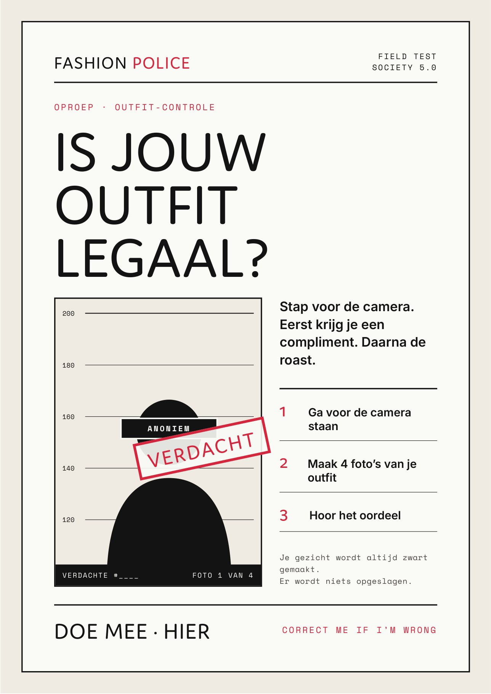

Ali Addi
Ik ben student aan de Hogeschool van Amsterdam. Ik bouw interactieve installaties met code en AI, en ik let daarbij op wat technologie met mensen doet.
Projecten

Fashion Police
Een slimme spiegel die je outfit beoordeelt en je verleidt om steeds meer van jezelf te laten zien. Dark Tech-project.
Mijn rol: creative technologist
Lees de DevLogDirect naar: Sprint 1 · Sprint 2 · De app en de code · Field test